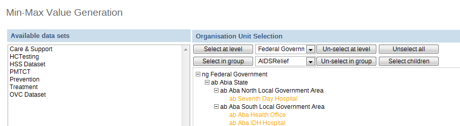

This administrative function can be used to generate min-max values, which are used as part of the data quality and validation process for specific organization units and data sets. Simply select the dataset from the left hand frame, and then select the required organisation units to generate the min-max values for from the organisational units selector on the right. Press the "Generate" button to generate or regenerate all min-max values. Press "Remove" to remove all min-max values which are currently stored in the database.
|  |